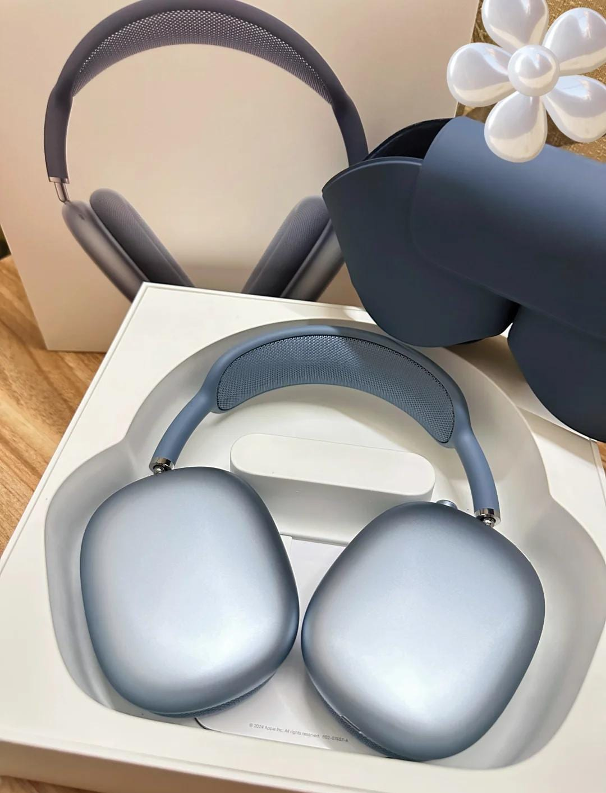

AirPods Max

计算音频的头戴旗舰，生态体验无缝流转
客观评测
AirPods Max 搭载 40mm Apple 自研动圈单元与双 H1 芯片，每侧八个麦克风用于主动降噪、通透模式与通话降噪，支持动态头部追踪空间音频。标称续航 20 小时，整机重量 384.8 克，铝合金外壳搭配不锈钢框架与记忆棉耳罩。实测降噪能力属业界顶级，通透模式自然真实；调音均衡开阔，低频控制力强，解析细腻，计算音频针对不同音源自适应优化，AAC 传输下表现稳定。
主观点评
AirPods Max 是苹果式的答案：把复杂的声学工程隐藏在优雅的铝合金弧线之下。戴上它，世界被温柔地按下静音键，通透模式又能让对话自然流入；空间音频看电影时，声场仿佛悬在头顶。它确实偏重，久戴颈部略有负担，充电方式也让人无奈。但当你置身苹果生态之中，那种无缝流转、随叫随到的从容，依然让人心甘情愿地为它买单。
优点与不足
- 降噪与通透模式均为业界顶级水准
- 空间音频沉浸感强，计算音频适配出色
- 铝金属做工精致，苹果生态无缝切换
- 384.8g 偏重，久戴颈部负担明显
- Lightning 充电、智能耳机套略显繁琐
- 售价高昂，安卓用户体验大打折扣
参数规格
| 类型 | 包耳式无线主动降噪 |
|---|---|
| 单元 | 40mm Apple 自研动圈 |
| 芯片 | 双 H1 芯片（每侧一颗） |
| 降噪 | 主动降噪 + 通透模式 |
| 续航 | 约 20 小时 |
| 重量 | 约 384.8g |
| 材质 | 铝金属外壳、不锈钢框架、记忆棉耳罩 |
| 操控 | 数码旋钮 + “嘿 Siri” 语音唤醒 |
| 充电 | Lightning 接口 |
| 特色 | 动态头部追踪空间音频 |